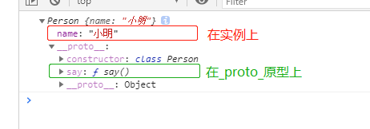
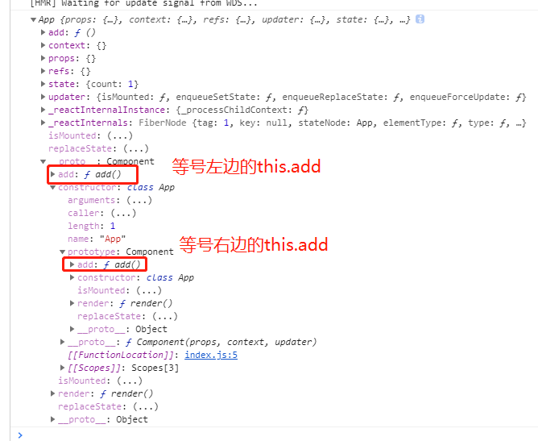

003-深入理解事件绑定的this问题
1、问题
首先来看一个最简单经典的代码
class App extends React.Component {
constructor (props) {
super(props);
this.state = {
count: 1
};
}
add () {
console.log(this); // 这里的this=undefined
}
render () {
return <button type="button" onClick={this.add}>累加:{this.state.count}</button>
}
};
我们都知道，通过这种方式调用的，add()方法里面的this=undefined，那么为什么是undefined呢
2、解析问题
要明白这个事件，需要从class类入手
class Person {
constructor (name) {
this.name = name; // 放在实例上
}
say () { // 放在Person这个原型对象上
console.log(this);
}
}
const p1 = new Person('小明');
console.log(p1);
p1.say();

当执行p1.say()的时候，say()里面的this就是指向p1这个实例
假如改成下面的代码
const p1 = new Person('小明');
const xx = p1.say; // 先赋值给一个变量
xx(); // 再通过变量调用，那么这个时候 `say()` 里面的this就是undefined了
这个就是class的特点了，只有通过实例调用的，即上面的p1.say() 。方法里面的this才会指向实例
而第2中情况，是把方法赋值给了一个变量，然后再调用该变量xx()，这种是函数的直接调用。
而js基础知道，函数的直接调用，里面的this应该为window的。
function yy () {
console.log(this); // 函数直接调用，this=window
}
yy();
然而在上面的例子，我们看到的this=underfined。这又是为什么呢？
这是class类的另外一个特性，class类会将其定义的所有方法，都默认内部开启严格模式，所以this不敢指向全局对象，只能指向undefined
function yy () {
'use strict'
console.log(this); // 因为开启了严格模式，所以这个this=underfined
}
yy();
最后，我们回到react代码
<button type="button" onClick={this.add}></button>
中onClick={this.add}是发生了什么事
首先this.add没有()说明不会调用，而是取出这个函数然后交给onClick做为回调。当点击事件发生的时候，js从堆里面直接拿出那个函数执行，这种情况根本不是通过实例.方法的方法去调用，是直接调用的+类方法默认开启严格模式，所以this=underfined
3、加个bind为什么就可以
为了解决上面的问题，我们常会用下面的写法
constructor (props) {
super(props);
this.state = {
count: 1
};
this.add = this.add.bind(this); // 加上这一句就可以
}
那么为什么加上这一句就可能了呢，我们知道bind是改变this的指向
首先要明白等号右侧的this.add做了什么事，它会先去App的实例上找，这个时候App实例还没有呢，肯定找不到，就会沿着原型链找，知道找到了App原型上，这个时候就找到了。
然后this.add.bind(this)改变了this指向，bind()得到的是一个新函数，不会执行函数
然后就到了等号左边this.add = this.add(this)，这个等号的左边this.add就会实例上多了个add()方法

当点击事件触发了，实例还是那个的有add()就会直接调用，而不会调用到App类上的
为了清楚这层关系，我们方法名起个不一样的
class App extends React.Component {
constructor (props) {
super(props);
this.state = {
count: 1
};
this.say = this.add.bind(this);
}
add () {
console.log(this);
}
render () {
return (
<div>
<!-- 写this.say没有问题，this指向正常 -->
<button type="button" onClick={this.say}>111</button>
<!-- 写this.add有问题，this指向正常 -->
<button type="button" onClick={this.add}>222</button>
</div>
)
}
};
4、推荐写法
class App extends React.Component {
state = {
name: 'xiaoming',
age: 23
}
say = () => { // 用属性+箭头函数的方式
console.log(this.state.name);
}
render () {
return <button type="button" onClick={this.say}>按钮{this.state.name}</button>;
}
};